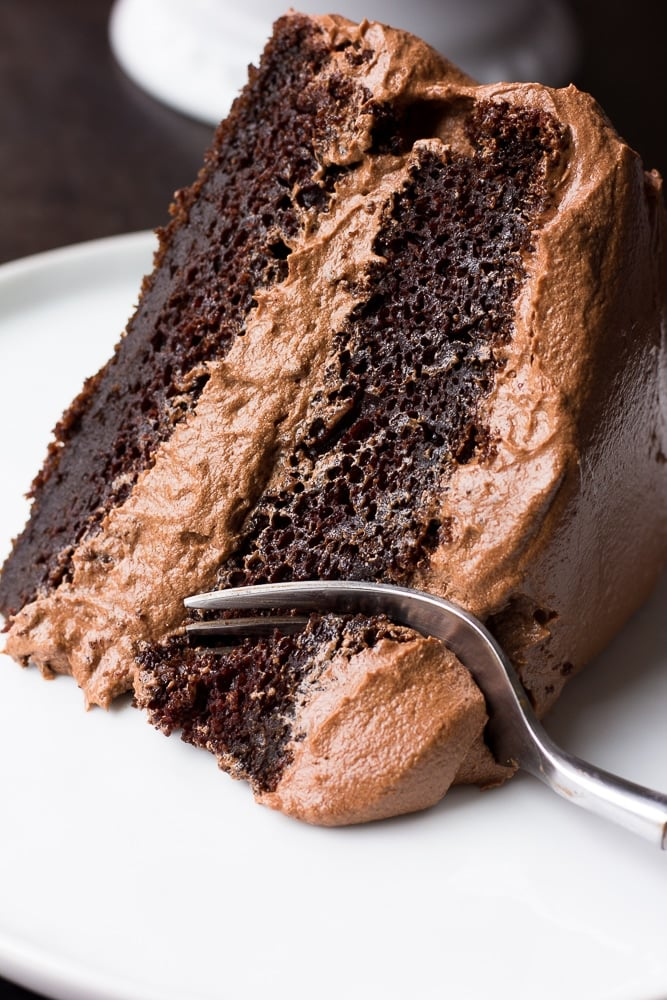

Chocolate Cake

Vegan Chocolate Cake recipe
Recipe and step-by-step instructions for a DIY vegan chocolate cake
Ingredients
1 ½ cups all-purpose flour 1 cup white sugar ¼ cup cocoa powder 1 teaspoon baking soda ½ teaspoon salt 1 cup water ⅓ cup vegetable oil 1 teaspoon vanilla extract 1 teaspoon distilled white vinegar
Steps
Step 1
Gather all ingredients
Step 2
Preheat the oven to 350 degrees F (175 degrees C). Lightly grease a 9x5-inch loaf pan.
Step 3
Sift flour, sugar, cocoa, baking soda, and salt together in a large bowl.
Step 4
Add water, oil, vanilla, and vinegar; mix together until smooth.
Step 5
Pour mixture into the prepared pan.
Step 6
Bake in the preheated oven until a toothpick inserted into the center comes out clean, about 45 minutes.
Tips
You can use rice flour or something other than wheat.
Try adding chocolate chips or chopped nuts.